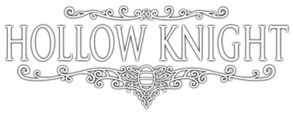

Фан сайт об игре "Hollow Knight"
Hollow Knight (с англ. — «Полый Рыцарь») — компьютерная игра в жанре метроидвания,
разработанная и выпущенная австралийской инди-студией Team Cherry 24 февраля 2017 года для Windows.

Независимая креативная студия из Австралии представила уникальное авторское творение – игру под названием «Hollow Knight». Герой оказывается в небольшом отмирающем городке, назван который Дертомаутом, странным образом он оказывается под его глубинами в пугающих и неизведанных катакомбах. Здесь его на каждом шагу подстерегают жуткие враги, неожиданные ловушки и давние секреты, разгадать которые предстоит именно ему.
Персонаж – смелый рыцарь, который неожиданно оказывается в страшном месте, где лицом к лицу столкнется с личными страхами, пороками и смертельной опасностью. В начале пути у него нет даже экипировки, но в своих странствиях он отыщет древние артефакты силы, узнает много тайн, откроет множество новых навыков.

Интересные факты:
Год выхода игры: 2017 год
Платформы: Windows, Nintendo Switch, Xbox One, PlayStation 4, Linux, MacOS
Режим: Однопользовательская игра
Разработчик: Team Cherry
Дизайнер: Ари Гибсон
Музыкальная составляющая: Кристофер Ларкин
Жанр: Метроидвания
Обновления игры
После запуска Hollow Knight получила бесплатный дополнительный игровой контент в виде DLC:
-
Hidden Dreams

Появляются могущественные новые враги! Новый предмет - гвоздь грёз. Новые битвы с улучшенными версиями боссов. Новые улучшения. Новая музыка.
-
The Grimm Troupe

Зажгите Фонарь Кошмара, чтобы призвать Труппу. Новые задания и бои с Новыми Боссами. Новые Амулеты. Новые Враги. Новые Друзья.
-
Lifeblood

Королевство обновлено! Новый босс. Улучшенные боссы. Изменения и доработки по всей игре.
-
Godmaster

Займите своё место среди богов. Новые персонажи и задания. Новые бои с боссами. Эпическая новая музыка!

Фандом
Эта вики — объединение сообщества фанатов, где каждый может принять участие в проекте и внести свой вклад в развитие. Не бойтесь проявить себя и тем более попросить помощи в начинании — здесь рады каждому
Hollow Knight WikiЗавораживающая оркестровая работа
Эпическая музыка Hollow Knight, написанная и спродюсированная Кристофером Ларкином, пронизывает всю игру, отражая печаль о величественной цивилизации, доведенной до руин.
Официальные саундтрекиОфициальный Трейлер
-
Ари Гибсон
Ари отвечает за дизайн игры вместе с Уильямом. Он создает игровое оформление, окружение и анимирует сотни багов.
-

Уильям Пеллен
Уильям разрабатывает игру вместе с Ари. Он создает врага, босса и игровое поведение для Hollow Knight. Если враг кажется вам слишком сложным или непреодолимым препятствием, вините его!
-
Дэвид Кази
Дэйв отвечал за техническое руководство Hollow Knight. Он делил свое время между запуском игры и исправлением того, что сломали Ари и Уильям.